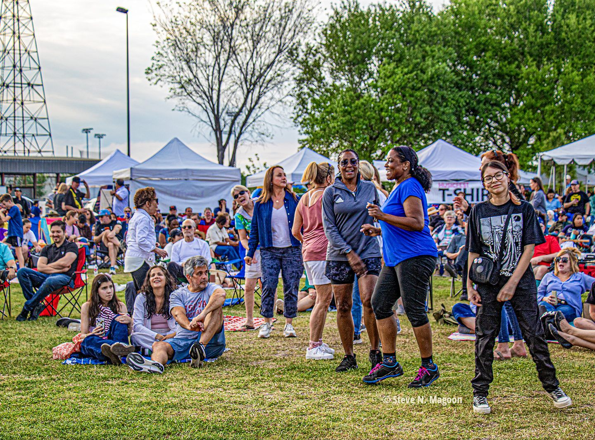

About Levitt Houston
Building community through music.
Levitt Pavilion Houston is the local nonprofit presenting free live music at Willow Waterhole and leading the effort to create a permanent Levitt Pavilion in Southwest Houston.

Our story
More than a decade of free music at Willow Waterhole.
Since 2012, MusicFest and related events have brought local artists, families and neighbors together for free live music at Willow Waterhole.
That experience in producing concerts, building partnerships and bringing people together on the lawn is the foundation for today’s Levitt Houston and the recurring concert series beginning in 2027.
Who we are
A Houston nonprofit building Levitt here.
Friends of Levitt Pavilion Houston is the local nonprofit responsible for bringing the Levitt model to Houston. We produce free music, build local support, lead planning for the permanent pavilion and work with public and community partners to move the effort forward.
Locally led
A volunteer Houston board sets direction, raises support and stewards the organization.
Proven on the lawn
More than a decade of MusicFest gives us real experience producing free outdoor music at Willow Waterhole.
Building the permanent home
Levitt Houston is leading the planning and fundraising for a permanent pavilion beside Willow Waterhole Greenway.
Part of the Levitt network
Part of a national network built around free professional music, welcoming public spaces and community connection, supported by the Levitt Foundation.
Our partners
Built through partnership.
Levitt Houston works with public, national and community partners to present free music today and create the permanent Levitt Pavilion for Southwest Houston.
Site and development partner
Southwest Houston Redevelopment Authority (TIRZ 20)
Acquired the Gasmer property and is leading planning and development of the broader site that will include Levitt Houston’s future home.
National partner
Levitt Foundation
Provides the Levitt model, national expertise and ongoing support for bringing free outdoor music to Houston.
City partner
City of Houston
Longtime public partner helping advance Levitt Houston and the permanent pavilion at Willow Waterhole.
Greenway partner
Willow Waterhole Greenspace Conservancy
Steward of Willow Waterhole Greenway and longtime partner in MusicFest and community programming.
Community partner
Brays Oaks Management District
Supports the surrounding Brays Oaks community and efforts that strengthen Willow Waterhole as a regional destination.
Leadership
Board of directors
A volunteer board of community and civic leaders guides Levitt Houston.
- Howard SacksChair
- Dave HawesVice Chair
- Deborah AndersonSecretary
- Valerie RungeTreasurer
- Becky Edmondson
- Carol Kehlenbrink
- Curtis Monroe
- Frank Staats
- Fred Meyer
- Jay Broadfoot
- Jeff Peters
- Kathleen Ownby
- Vernon Smith
Organization
Organization information
Legal name
Friends of Levitt Pavilion Houston, Inc.
Status
501(c)(3) nonprofit organization
Mailing address
5300 N. Braeswood Blvd., Suite 4‑202
Houston, TX 77096
Financials
Our latest Form 990 is available on request. Contact us.